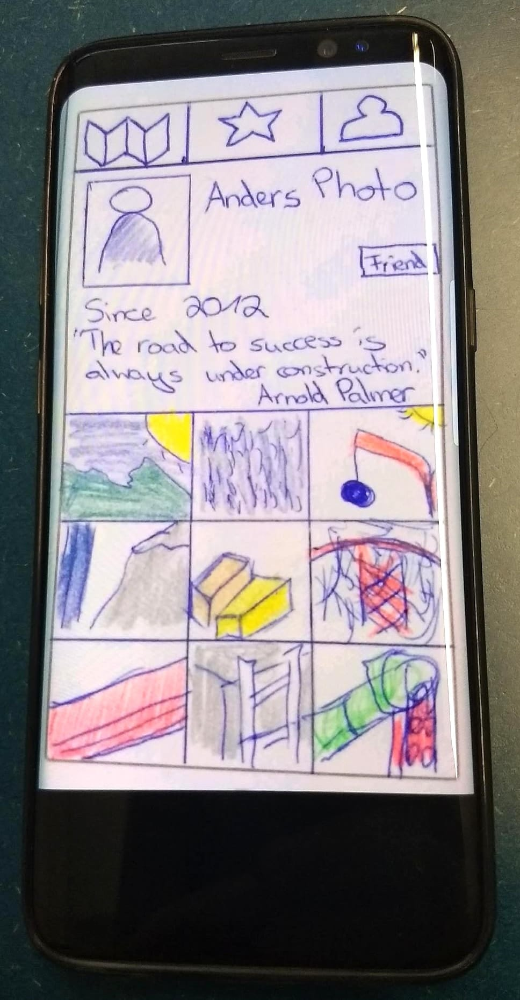
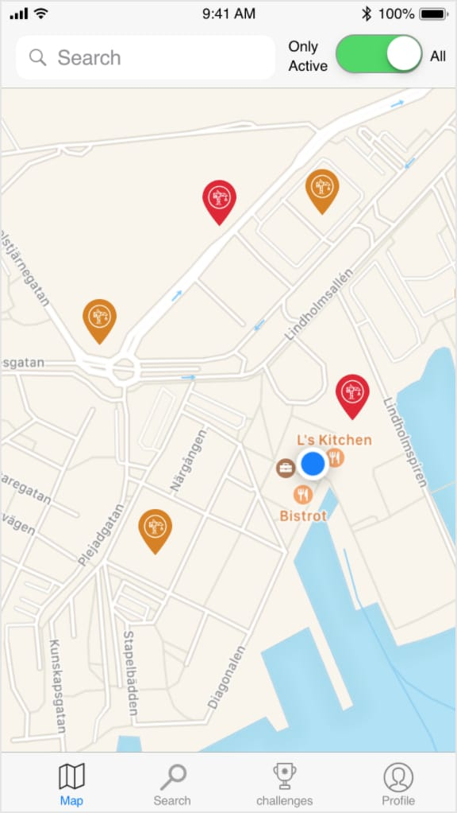
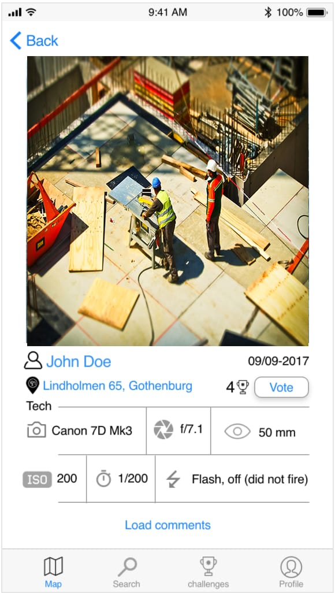
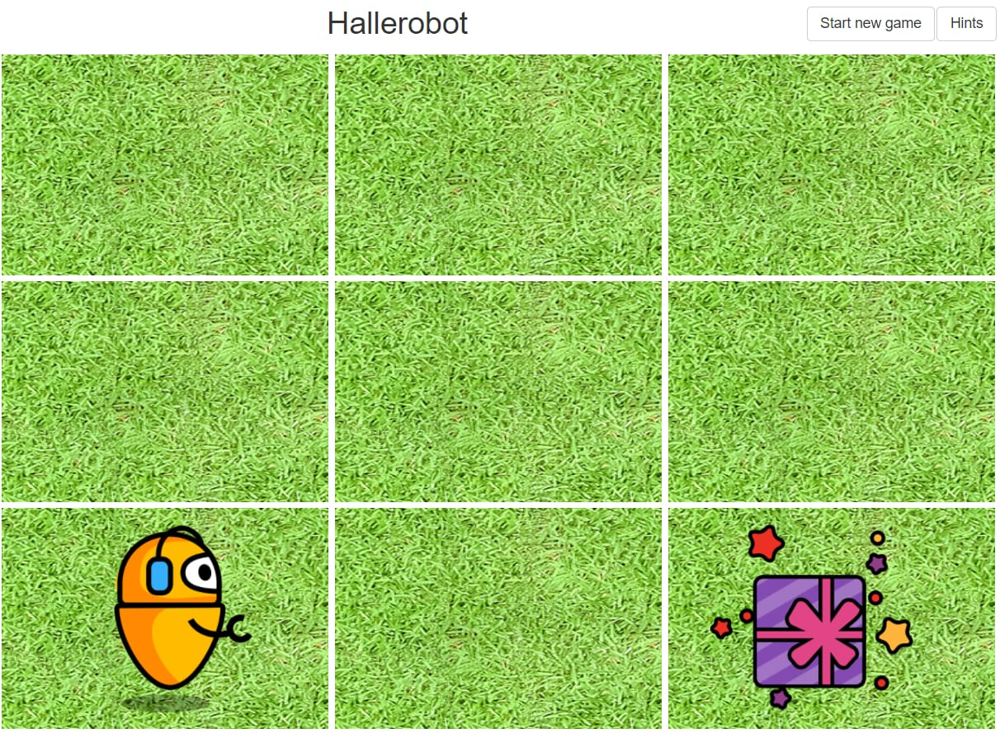
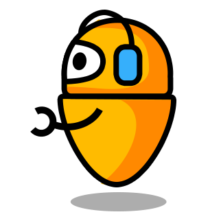
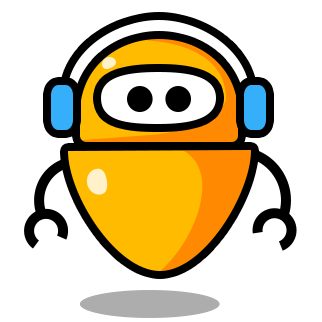
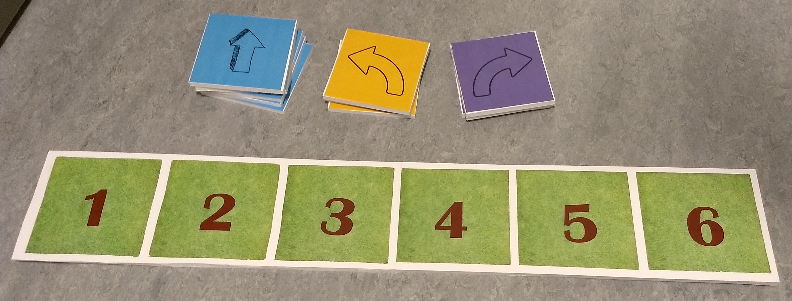
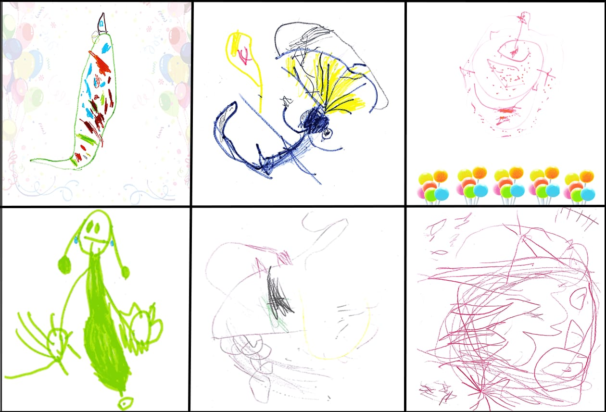

After living in Germany and the Netherlands, I am currently based in Gothenburg (Sweden) where I study Interaction Design and Technologies at the Chalmers University of Technology.
Apart from that, I have a part-time job as a Frontend Developer where I work remotely from Sweden.
During the Prototyping in Interaction Design course I learned how to prototype with different materials.
For example, I created 3D, Virtual Reality and Video prototypes within one day workshops to get to know the basics and possibilities within prototyping.
The following example is one of the video prototypes. I created this video in a group.
We created a manuscript of our idea and developed a storyboard.
Afterwards we read the story and filmed the specific picture of the storyboard.
This approach is perfect for a quick video to explain the idea, the story behind it and reach a big audience at the same time.
It is easy to understand and can be spread in a way that a lot of people get a clear vision of the idea in a short time (2 minutes).
Construction Site Photography
Background
The Construction Site Photography interface was developed in a team consistent of 5 people.
The two backgrounds that were given were 'Photographers' and 'Construction sites'.
The goal was to create an interface for an app based on this background.
Design Process
At first, we started to create different ideas with the help of the 'Design charette', 'Brainstorming', 'Now, How, Wow Matrix' and 'Dot Voting' methods.
In the end we had like 9 ideas and chose the best one according to the design methods - 'Construction Site Photography'.
"Our mission is to create a system mainly for photographers which provides an interactive map with construction sites, tagged photos from other users and photographic challenges. The system works as an educational, inspirational and explorational system for photographers."
After the idea generation process we conducted semi-structured interviews with two photographers to broaden our knowledge.
In between the two interviews we created sketches and prototypes with the POP app.
In POP it is possible to take an image of the sketches and add links to connect the different pages for the interaction with the user.
Fig1. - Sketch of a construction map.
Fig2. - Sketch of a user profile.

Fig3. - Image of a user profile within POP.
The sketches as well as the POP prototype were tested by a Focus group, user tests and one of the two professional photographers.
After these tests and some design changes, we created a digital version of our sketches.
Final design

Fig4. - Digital image of a construction map.
Fig5. - Digital image of the construction gallery.

Fig6. - Digital image of the user profile.
Learning Outcomes
At the end of the project we figured out that the interfaces suited the best for hoppy photographers interested in construction sites.
In case this app should fit for professional photographers as well, some major changes would have to be made.
For example, due to the interviews with the professional photographers, we found out that they would require some job related content as well.
At this point it is important to make a decision to focus either on hobby or professional photographers.
All in all, we learned that prestudies are very important to figure out the needs of the target group and the special requirements they have.
Children's Technology
Background
Children today use technology fluently and naturally in many parts of their lives.
But children are also far detached from the inner workings of technology, these are hidden away behind nice usable interfaces.
A new wave of games that teach children programming have been hitting the market in the past 10 years and new visual programming tools are emerging,
with the aim to reintroduce programming to the wider public.
Programming is not something that is part of our natural upbringing, such as writing and painting.
In this project we tried to deal with the the possible solution to the problem stated above and we worked with 3-4 age children designing a logic game.
Design Process
Before we started with the design, we visited the preschool and discussed the project purpose with the teacher.
Additionally, we observed the environment and the children and planned three workshops with them.
After the first impression we brainstormed and looked for existing games and technologies.
As a group we had an ideation session and worked out a prototype (based on Wizard of Oz) to test it in the first workshop with the children.
During that workshop we observed the children's behavior and got feedback from the teacher as well.
In the second workshop we tested our improved prototype and
carried out a codesign session in which the children were allowed to draw their own robots.
The third workshop included our final design and a thank you certificate for all children.
To get some valuable and constructive feedback we used structured observation methods and had a final debrief dialogue with the teacher and the children.
Final design
All in all, we ended up with a 3x3 grid as shown in figure 1.
The robot always shows up in the lower left grid, facing upwards, and can be moved with the arrows.

Fig1. - Hallerobot -> grid with robot and gift.
The facing direction (image) of the robot can be changed by using the keyboard buttons 'a' (figure 2), 'w' (figure 3),
's' (figure \4) and 'd' (shown within figure 1).

Fig2. - Robot facing left.
Fig3. - Robot facing up.

Fig4. - Robot facing down.
The gift is randomly positioned on a square in the grid, but never on or next to the robot.
The robot is moved by a facilitator, for example a teacher, based on the arrows the children have put on the game board (figure 5).

Fig5. - Game board and arrows.
Once the robot is positioned on the same square as the gift, the teachers is supposed to click on 'enter' to start the applause and animation.
The applause is played for 10 seconds and afterwards an animated robot with happy background music is shown to the children.
The animated robots are robots that the children have drawn themselves, like in figure 6.

Fig6. - Robots drawn by the children.
The final prototype can be found on Github.
The project was carried out by Wiebke Meyer, Jan Urbanek, Anukrit Verma and Zihua Yang.